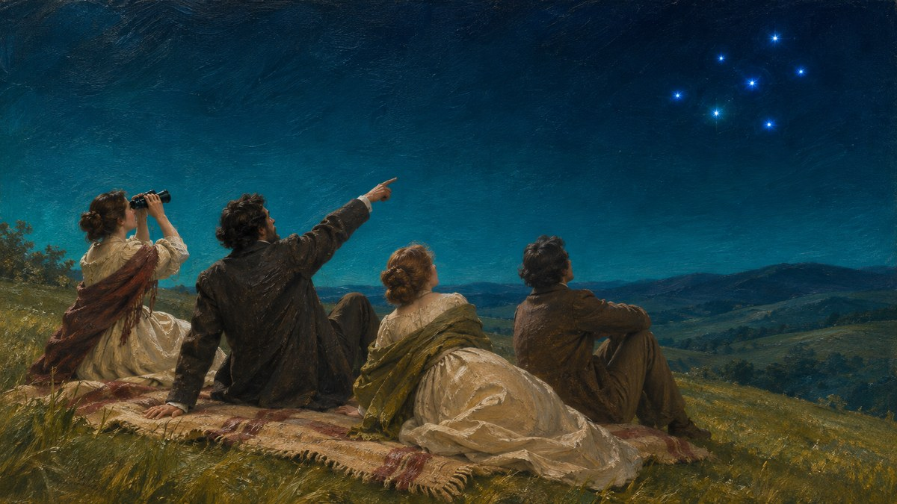

Urano en oposición 2026: cómo verlo y qué simboliza

¿Urano está en Tauro o en Géminis? Esta semana vas a leer las dos cosas, y ninguna de las dos es un error. Hoy, miércoles 25 de noviembre de 2026, el planeta llega a su oposición: en el cielo aparece delante de las estrellas de Tauro, mientras que en tu horóscopo occidental ya figura en Géminis.
Me parece la parte más interesante del asunto. Primero, lo que se puede observar. Después, lo que la astrología le atribuye, que es otro terreno y conviene no mezclarlos.
Qué pasa hoy en el cielo
Una oposición ocurre cuando la Tierra queda entre el Sol y un planeta exterior. Visto desde aquí, ese planeta sale por el este al anochecer, alcanza su punto más alto hacia la medianoche y se pone al amanecer. Además coincide con la época en que lo tenemos más cerca, así que es cuando mejor brilla.
EarthSky sitúa el momento exacto a las 23:00 UTC del 25 de noviembre: las 17:00 en Ciudad de México, las 18:00 en Bogotá, las 20:00 en Buenos Aires y Santiago, y la medianoche del 25 al 26 en la España peninsular. No hace falta mirar justo a esa hora. El aspecto de Urano apenas cambia en las semanas anteriores y posteriores.
Algunas cifras para hacerse una idea:
- Distancia: unas 18,4 veces la que separa la Tierra del Sol. Su luz tarda alrededor de 2,6 horas en llegar.
- Brillo: magnitud 5,6, en el límite de lo que el ojo capta bajo un cielo muy oscuro.
- Tamaño aparente: 3,8 segundos de arco, un disco diminuto de tono verde azulado.
- Zona: en Tauro, entre dos cúmulos conocidos, las Pléyades y las Híades.
Cómo buscarlo sin frustrarte
Aquí hay una pega: la Luna. Ayer fue la Superluna del Castor y esta noche sigue casi llena y muy cerca de Urano, a unos 6 grados según la revista BBC Sky at Night. Sirve como referencia para saber hacia dónde mirar, pero su resplandor borra buena parte de lo débil. La misma revista aconsejaba observarlo el día 22, con la Luna más lejos.
Si hoy no lo encuentras, no pasa nada. Prueba en las próximas noches, cuando la Luna salga cada vez más tarde y deje un rato de cielo oscuro después del anochecer. Los primeros días de diciembre son una buena apuesta. EarthSky indica que el planeta mantiene un brillo similar hasta mediados de diciembre y que seguirá en el cielo vespertino hasta abril de 2027.
- Localiza las Pléyades, ese grupito apretado de estrellas azuladas.
- Lleva un mapa del cielo o una aplicación actualizada. Sin carta es difícil distinguirlo de una estrella cualquiera.
- Usa prismáticos apoyados en algo firme. Verás un punto.
- Para apreciarlo como un pequeño disco necesitas un telescopio y bastantes aumentos.
La expectativa realista es modesta: un puntito. Lo emocionante es saber qué es. William Herschel lo identificó en 1781 y fue el primer planeta descubierto con telescopio; antes había quedado anotado varias veces como si fuera una estrella. Tarda unos 84 años en dar la vuelta al Sol, más o menos una vida humana larga. La próxima oposición será el 30 de noviembre de 2027.
Entonces, ¿Tauro o Géminis?
La astronomía habla de constelaciones, que son regiones del cielo con estrellas. La astrología occidental tropical habla de signos, doce tramos iguales que se cuentan desde el equinoccio de marzo. Hace unos dos mil años coincidían bastante; el lento balanceo del eje terrestre los ha ido desplazando.
Por eso Urano se ve hoy en la constelación de Tauro y, a la vez, transita el signo de Géminis. Según las efemérides astrológicas de Cafe Astrology, entró en Géminis en julio de 2025, volvió a Tauro en noviembre de ese año y regresó a Géminis a finales de abril de 2026 para quedarse varios años, hasta la década de 2030. Si lees que esta oposición «cae en Tauro», se está hablando de las estrellas, no del signo astrológico tropical.
Otro detalle que suele confundir: cerca de la oposición, los planetas exteriores se ven retroceder sobre el fondo de estrellas. Es un efecto de perspectiva, porque la Tierra los adelanta. Puedes revisar qué astros están así en Planetas retrógrados hoy.
Qué simboliza en la tradición astrológica
La astrología asocia Urano con el cambio repentino, la invención, la independencia y las ganas de romper una costumbre que ya no sirve. Géminis se relaciona con la palabra, el aprendizaje, la curiosidad y los trayectos cortos. La combinación suele leerse como una etapa de formas nuevas de comunicarse y de aprender, con un riesgo señalado por la propia tradición: dispersarse, empezar mucho y terminar poco.
El Sol acaba de entrar en Sagitario, el signo opuesto a Géminis. Simbólicamente, la oposición pone frente a frente la visión de conjunto y la idea inesperada. Nada de esto está demostrado por la ciencia ni anuncia hechos concretos. Yo lo tomo como una pregunta útil, no como un pronóstico.
Dónde te toca según tu signo solar
Esta tabla cuenta las casas desde tu signo solar, un método sencillo que usan muchos horóscopos. Muestra en qué terreno cae Géminis para cada persona.
- Aries: casa 3, conversaciones y entorno cercano.
- Tauro: casa 2, recursos y lo que valoras.
- Géminis: casa 1, identidad y manera de presentarte.
- Cáncer: casa 12, retiro y mundo interior.
- Leo: casa 11, amistades y proyectos en grupo.
- Virgo: casa 10, vocación y rumbo.
- Libra: casa 9, estudios, viajes e ideas.
- Escorpio: casa 8, confianza y transformaciones.
- Sagitario: casa 7, pareja y acuerdos.
- Capricornio: casa 6, rutinas y tareas diarias.
- Acuario: casa 5, creatividad y disfrute.
- Piscis: casa 4, hogar y raíces.
La limitación es evidente: agrupa a millones de personas. Si conoces tu hora de nacimiento, cuenta desde el ascendente, o mejor mira en Tránsitos de hoy si Urano está activando algún punto de tu carta. Es posible que no toque ninguno, y entonces la tradición diría que pasa de fondo.
Un ejercicio para usar la fecha
Elige una sola rutina que haces en automático y cámbiala durante una semana: otro camino, otra hora para contestar mensajes, un tema del que nunca lees. Anota qué notaste. El miércoles siguiente decides si la conservas. Es pequeño a propósito; no hace falta dar un vuelco a tu vida porque un planeta esté en oposición.
Preguntas rápidas
¿Puedo verlo a simple vista?
En teoría sí, desde un lugar muy oscuro y sin Luna, sabiendo exactamente dónde mirar. En la práctica, usa prismáticos.
¿Ya pasó el momento? ¿Llego tarde?
No. El instante exacto es solo una referencia. Durante las próximas semanas se observa prácticamente igual.
¿Me va a traer cambios bruscos?
No hay evidencia de que un planeta provoque sucesos en la vida de nadie. El simbolismo sirve para reflexionar.
¿Qué te pareció este artículo? Cuéntanos tu experiencia.
¡Gracias por tu comentario!